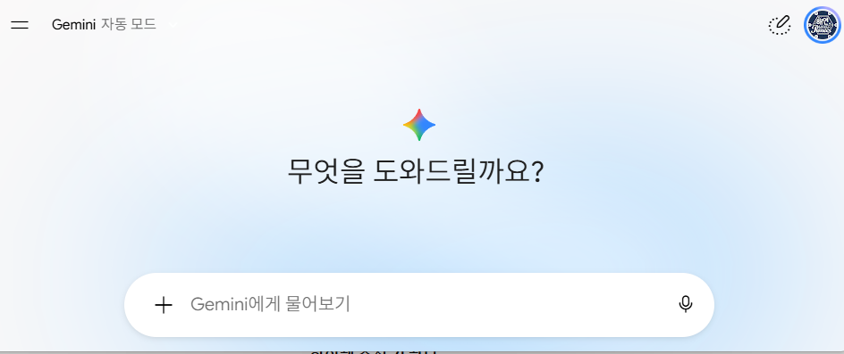

1차시
AI와 대화하여 웹페이지 제작하기
말로 설명했더니 화면이 생겼다
1차시 · AI와 대화하여 웹페이지 제작하기
오늘의 흐름 · 45분
시간은 안내일 뿐입니다. 막히는 사람이 많으면 실습 시간을 늘립니다.
1차시 · AI와 대화하여 웹페이지 제작하기
코딩을 몰라도 만들 수 있을까
있습니다.
만들고 싶은 것을 말로 설명하면 AI가 코드를 써 줍니다.
이런 방식을 바이브코딩이라고 합니다.
1차시 · AI와 대화하여 웹페이지 제작하기
바이브코딩이란
1차시 · AI와 대화하여 웹페이지 제작하기
오늘 하는 일
- 만들고 싶은 것을 AI에게 설명한다
- 캔버스에 바로 뜬 화면을 눌러 본다
- 마음에 안 드는 부분을 고쳐 달라고 한다
- 원하는 모습이 될 때까지 반복한다
설치할 것도, 저장할 것도 없습니다. 오늘은 만들고 고치는 것만 합니다.
1차시 · AI와 대화하여 웹페이지 제작하기
오늘 만들 것
나를 소개하는 페이지
큰 제목, 한 줄 소개, 눌러서 펼쳐지는 카드 세 개
1차시 · AI와 대화하여 웹페이지 제작하기
제미나이 열기
학교 구글 계정으로 로그인합니다. 주소는 gemini.google.com

1차시 · AI와 대화하여 웹페이지 제작하기
캔버스 켜기
입력창 아래에서 캔버스를 눌러 켜 둡니다. 이걸 켜야 만든 화면이 바로 보입니다.

1차시 · AI와 대화하여 웹페이지 제작하기
캔버스가 하는 일
1차시 · AI와 대화하여 웹페이지 제작하기
잘 말하는 네 가지 방법
이 네 가지를 말해 주면 원하는 것에 훨씬 가까워집니다.
1차시 · AI와 대화하여 웹페이지 제작하기
프롬프트 넣어 보기
워크벤치에서 1차시 프롬프트를 복사해 그대로 붙여넣습니다.

1차시 · AI와 대화하여 웹페이지 제작하기
이제 직접
22분, 내 페이지 만들기
먼저 그대로 넣어 보고, 그다음 내 이야기로 바꿔 보세요.
색과 글자도 바꿔 달라고 해 보세요.
1차시 · AI와 대화하여 웹페이지 제작하기
AI를 쓸 때의 약속
- 이름, 연락처, 주소, 학교 이름은 적지 않는다
- AI가 준 답이 틀릴 때가 있다 — 직접 눌러서 확인한다
- 만든 것은 친구들이 보게 된다 — 누군가를 놀리는 내용은 만들지 않는다
- AI가 만들었어도 그 결과에 대한 책임은 올린 사람에게 있다
1차시 · AI와 대화하여 웹페이지 제작하기
다음 시간
내 게임 만들기
만들고 싶은 게임을 하나 생각해 오세요.